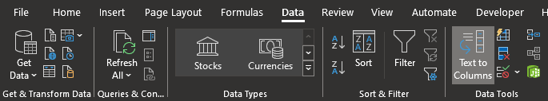

Exercise 5.1 – Reading Reports
Read the Full Pedon Description Report
In the Explorer pane Select the Reports Tab. In the NSSC Pangaea folder find and open the report “PEDON - Pedon Desc (metric) w/format & unformat notes” and read the report description to determine the data needed for the report.
Copy the objects listed that are used to run the report in the report description and paste into a document and submit by placing it in your exercise submission folder.
Read the T factor Comparison Report
In the Explorer pane Select the reports tab if not already selected. In the NSSC Pangaea folder find and open the report “UTIL - Comparison of T Factor, stored vs calculated - html N” and read the report description to determine the data elements needed for the report.
Copy the data elements listed that are used to calculate the T factor report in the report description and paste into a document and submit by placing it in your exercise submission folder.
Exercise 5.2 – Running Reports
Load Data for the Full Pedon Description Report
To load data into selected set needed for the report “PEDON - Pedon Desc (metric) w/format & unformat notes” in the NSSC Pangaea report folder, select the query tab in the Explorer pane. In the NSSC Pangaea folder, run the query “POINT - Pedon/Site/Transect by User Site ID”, to load the site, pedon, and veg plot for User site ID 2021MN075503 into the selected set. Then use the load related for selected rows button to add the area linked to the site to your selected set. This pedon doesn’t have a Site Area Overlap, Site Association, or Map Unit Site Overlap to load.
Find and Run the Full Pedon Description Report
In the Explorer pane, select the Reports tab. In the NSSC Pangaea folder find the report “PEDON - Pedon Desc (metric) w/format & unformat notes” that is ready to use and run the report. Save the report and submit by placing it in your exercise submission folder. Include the answer to this question in the exercise document: Why is there no pedon classification generated in the report?
In the Explorer pane select the Report tab if not already selected. In the NSSC Pangaea folder find the report “UTIL - Comparison of T Factor, stored vs calculated - html N” that is ready to use and run the report on Soil Survey Area Symbol MN075. Save the report and submit by placing it in your exercise submission folder. Include a list of those Map Units and components with different T factors populated then the calculation generates in your exercise document to submit.
Exercise 5.3 – Exporting Reports
Run report “AGR - DRY_NCCPI - MU Aggregated Small Grains Export”on Soil Survey Area Symbol MN075 or MN001, make sure the Geographic Applicability parameter is set to “current wherever mapped”.
Copy the data from the .txt file and paste into Microsoft Excel, the data will be pasted into a single column. You will need to use text to columns feature in the Data tab. Delimit the data using the “|” pipe character.

This will separate the data into 6 columns, then sort the “Wtd_Small_grains_nccpi” values from the highest to lowest NCCPI rating for dryland small grains. Submit the .xlsx file by placing it in your exercise submission folder.